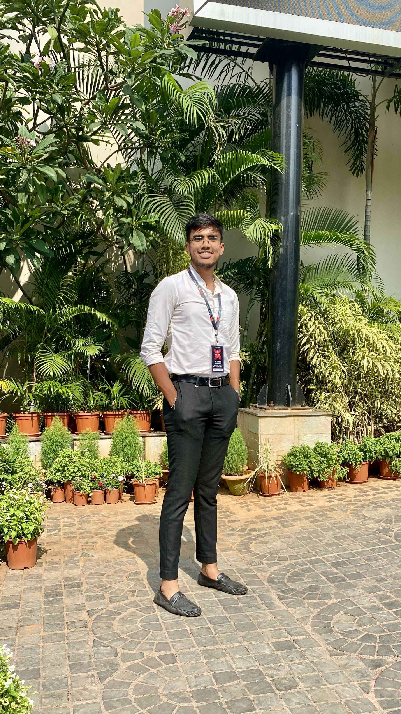

My Resume

Summary
UI Designer, Developer & Consultant | Driven B.Tech Undergrad & Creative Innovator | Embarking on a Journey of Design & Development Excellence
Education
-
BACHELOR OF TECHNOLOGY IN COMPUTER SCIENCE & ENGINEERING
Kalinga Institute of Industrial Technology, Odisha
May 2021 - May 2025
7.82/10.0
-
CENTRAL BOARD OF SECONDARY EDUCATION
Krishna Public School, Chattisgarh
May 2017- May 2021
89.6%
Work Experience
-
IzyCode | Android Development Intern
Virtual Internship | Feb 2024 – Mar 2024
-
Employed industry-standard design practices to develop 2 cutting-edge projects utilizing Flutter, alongside Figma for UI/UX
design: Expense Tracker & QR code generator showcasing proficiency in both design and development.
-
Demonstrated adeptness in application development, highlighting technical acumen through the successful completion of complex
tasks within the internship tenure of using API’s such as Redux, Firebase, BLOC, Git.
-
SALESFORCE | Software Development Intern
Virtual Internship | Dec 2023 – Jan 2024
-
Accomplished Salesforce intern with hands-on experience in Salesforce software and development. Earned the prestigious
Salesforce Developer Superset Badge, demonstrating expertise in customizing and building applications on the platform.
-
Integrated error handling mechanisms to ensure robustness and reliability thus reducing error to 0% - 10%.
-
BHILAI STEEL PLANT, SAIL | Android Development Intern
Bhilai, Chhattisgarh | Dec 2023 – Jan 2023
-
Leveraged advanced programming skills to engineer a highly interactive software solution tailored for efficient Employee
attendance management and task tracking, underscoring effective project execution and technical prowess by 30% - 40%.
-
Employed API’s to prioritize location authenticity, system detects location within 500m for instant disqualifications.
Projects
-
TUBERCULOSIS PATIENT & DOCTOR ENGAGEMENT APPLICATION
Flutter, Botsify, Firebase, Figma, Git
-
Utilized Figma & Flutter along with API’s such as GetX, BLOC, etc to carefully design & develop a user-oriented interface.
-
Integrated AI-driven chatbot functionality for swift issue resolution, appointment scheduling, and access to medical
professionals, handling patient tracking. thus reducing complexities by 40% - 50%.
-
LOCATION & TIME BASED APPLICATION
Flutter, Firebase, Figma, Geolocator, Time_Machine
-
Developed location and time-based (24hr format) application using Flutter and Firebase, integrated with Figma for UI/UX design.
-
Leveraged 80% accurate Geolocator & Time_Machine detecting user location & time, enabling region-based language greetings.
-
BRAIN TUMOR DETECTION
Python, PyTorch, TensorFlow, Google Drive, Matplotlib
-
Developed a Python-based PyTorch deep learning model, achieving 75% accuracy in brain tumor detection through rigorous testing
and evaluation.
Skills
-
Programming: C, C++, Java(UDEMY)
-
Software Development: HTML/CSS, Dart, XML, JS, Flutter(UDEMY), Salesforce, Figma, MySQL, Git, Firebase.
-
Key Strengths: Agile development, Software design, Software testing and development, Team Management & Leadership
-
Relevant Coursework: Software Engineering, Operating Systems, Algorithms, Artificial Intelligence, OOP, DBMS, Operating
Systems, Compiler Design
Positions Of Responsibility
-
UI/UX DESIGNER | FREELANCING
Jun 2023 – Oct 2023
-
Interacted with clients to Design & Deliver visually stunning and user-friendly Website’s & Application’s.
-
Captivated audiences and drove engagement for the client side to increase its market hold by 30%.
-
POINT OF CONTACT & GRAPHIC DESIGNER | KIIT ROBOTICS SOCIETY
Mar 2023 – Aug 2023
-
Served as a pivotal point of contact, collaborating with colleagues to craft visually compelling social media content aimed at
engaging viewers by 10% - 20% and fostering community participation.
-
Played a key role in the team’s achievements, highlighting collaborative excellence throughout the program.